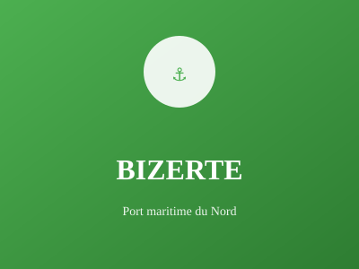

Port stratégique au nord

Port stratégique au nord de la Tunisie, Bizerte est un centre maritime important avec une longue histoire commerciale et militaire. La ville combine activités portuaires, tourisme côtier et pêche traditionnelle.